Objetivo
Este reporte documenta la Actividad 19, «Los primeros minutos cuentan: adquisición forense en escenas del crimen digital». Como primer respondiente se debe recolectar la evidencia de un sistema Windows que sigue encendido (adquisición «en caliente»). El objetivo es ejecutar los comandos de línea de comandos (CMD) y de PowerShell que recopilan información forense, explicar para qué sirve cada uno, interpretar su resultado, comparar lo que obtienen CMD y PowerShell, identificar indicios de actividad maliciosa y proponer los siguientes pasos de una investigación real.
Un sistema encendido guarda información que desaparece al apagarlo o reiniciarlo: los procesos, las conexiones de red, las sesiones de usuario, la caché DNS y la tabla ARP. Por eso estos datos son los primeros que se recolectan, según el orden de volatilidad que recomienda la RFC 3227. Los datos menos volátiles, como los registros de eventos y el árbol de archivos del disco, se recolectan al final.
Escenario. Para esta práctica se usó, como entorno de laboratorio, un equipo con Windows 10 Pro (nombre DESKTOP-A6V0BD7) tratado como el «sistema comprometido». La tabla 1 resume los 20 puntos de la actividad, el comando principal de cada uno y el archivo de evidencia que genera.
| Punto | Comando principal | Archivo de evidencia |
|---|---|---|
| 1 | date /t y time /t | 01_fecha_hora.txt |
| 2 | tasklist /v | 02_procesos.txt |
| 3 | sc query / Get-Service | 03_servicios_cmd.txt, 03_servicios_ps.txt |
| 4 | query user | 04_usuarios_activos.txt |
| 5 | NetUsers.exe / Get-CimInstance Win32_UserProfile / reg query ...ProfileList | 05_usuarios_historicos.txt, 05_usuarios_historicos_ps.txt, 05_perfiles_registro.txt |
| 6 | ipconfig /all | 06_red.txt |
| 7 | nbtstat -n y nbtstat -c | 07_netbios.txt |
| 8 | netstat -ano | 08_conexiones.txt |
| 9 | netstat -anob | 09_apps_puertos.txt |
| 10 | ipconfig /displaydns | 10_dns_dominios.txt |
| 11 | arp -a | 11_tabla_arp.txt |
| 12 | netsh wlan show profiles | 12_perfiles_wifi.txt |
| 13 | doskey /history / PSReadLine | 13_historial_cmd.txt, 13_historial_ps.txt |
| 14 | net use | 14_unidades_mapeadas.txt |
| 15 | net share | 15_recursos_compartidos.txt |
| 16 | systeminfo | 16_info_sistema.txt |
| 17 | schtasks /query /fo LIST /v | 17_tareas_programadas.txt |
| 18 | wevtutil epl System | System_Logs.evtx (Escritorio) |
| 19 | copy ...\hosts | 19_hosts.txt |
| 20 | dir C:\ /s /t:c | 20_arbol_directorios.txt |
| — | Get-FileHash -Algorithm SHA256 | 21_hashes.txt |
Desarrollo
Preparación del entorno y metodología
Se creó la carpeta de trabajo Act19 en el Escritorio. Dentro de ella está la carpeta NetUsers, con el programa NetUsers.exe y su archivo ReadMe, que la actividad proporciona para el punto 5 (figura 1). Todos los archivos de evidencia se guardan en esta misma carpeta.
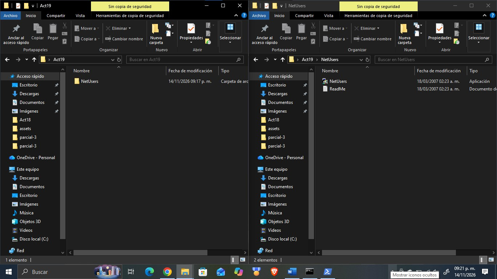
Se abrieron dos consolas con permisos de administrador: el Símbolo del sistema (CMD) y Windows PowerShell (figura 2). Se necesitan permisos de administrador porque varios comandos, como netstat -b, wevtutil o la lectura de los procesos de otros usuarios, no funcionan sin ellos. En ambas consolas se cambió a la carpeta de trabajo (figura 3):
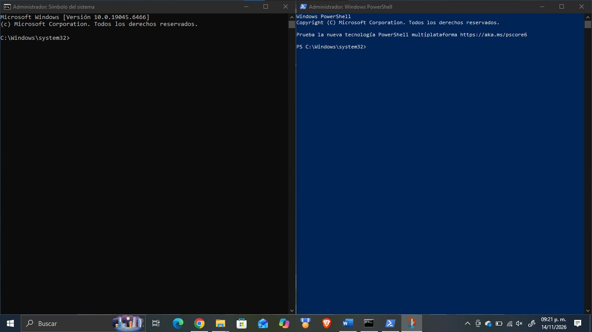
cd /d C:\Users\Usuario\Desktop\Act19
cd C:\Users\Usuario\Desktop\Act19 (PowerShell)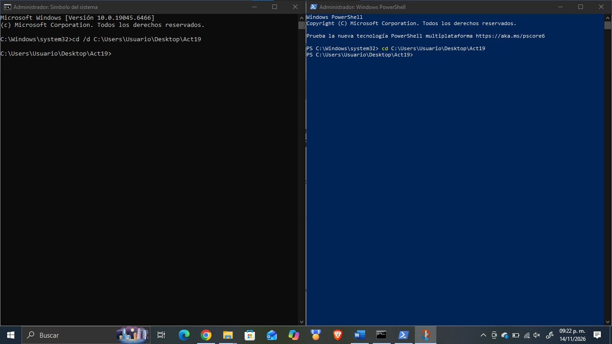
Método de trabajo. Cada comando se ejecuta con el mismo patrón: comando > archivo.txt && type archivo.txt. El símbolo > redirige el resultado a un archivo de texto y lo crea (>> lo agrega al final de uno existente); el operador && ejecuta el segundo comando solo si el primero terminó bien; y type muestra el archivo en pantalla. Así, la evidencia queda guardada en un archivo con nombre numerado y también visible en la captura. Los archivos se nombran con el número del punto para mantener el orden.
Punto 1. Fecha y hora del sistema
La hora del sistema es la referencia para ordenar en el tiempo todo lo demás. Se obtuvo con los comandos date /t y time /t, y la segunda salida se agregó al mismo archivo (figura 4):
date /t > 01_fecha_hora.txt && time /t >> 01_fecha_hora.txt && type 01_fecha_hora.txt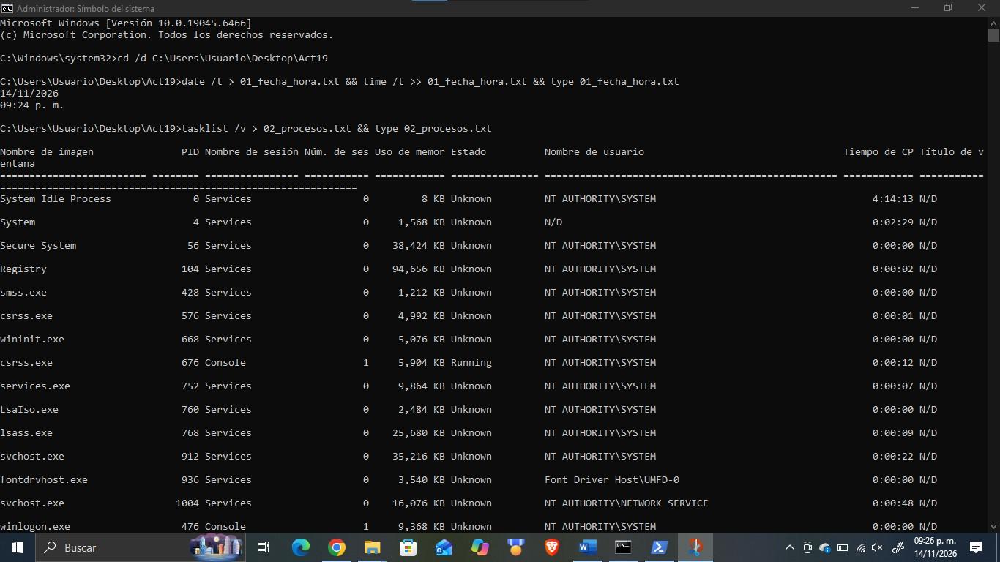
Resultado. El sistema marca la fecha 14/11/2026 y la hora 09:24 p. m. El comando systeminfo (punto 16) confirma que la zona horaria es UTC-06:00.
Importancia. La fecha y hora de la adquisición es el primer dato que debe quedar registrado, porque cada hallazgo posterior se interpreta respecto a ese instante. En un caso real se compara además con una fuente de tiempo de referencia (por ejemplo, un servidor NTP), para documentar si el reloj del equipo estaba adelantado o atrasado. Los comandos date y time solo muestran la hora local; no incluyen segundos ni zona horaria, por lo que la zona se toma de otras fuentes.
Punto 2. Procesos en ejecución
Para listar los procesos se usó tasklist con la opción /v (verbose), que además del nombre y el PID muestra la sesión, el uso de memoria, el estado, el usuario propietario, el tiempo de CPU y el título de la ventana (figuras 4 a 6):
tasklist /v > 02_procesos.txt && type 02_procesos.txt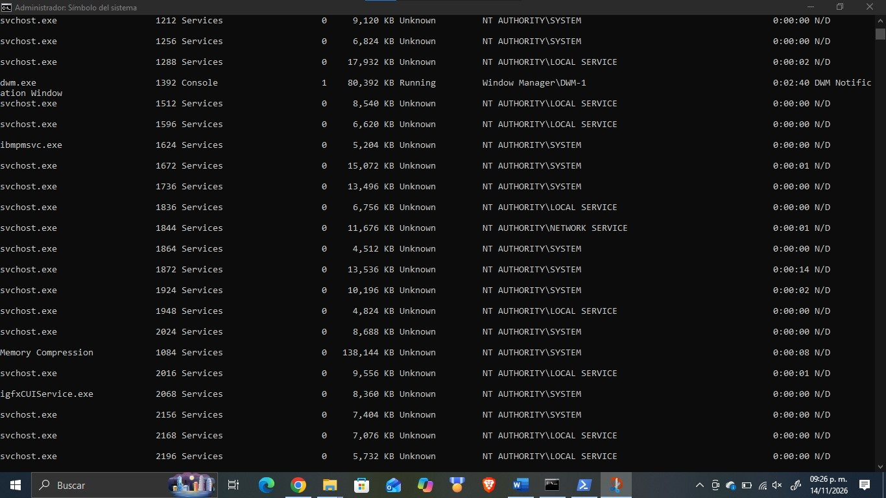
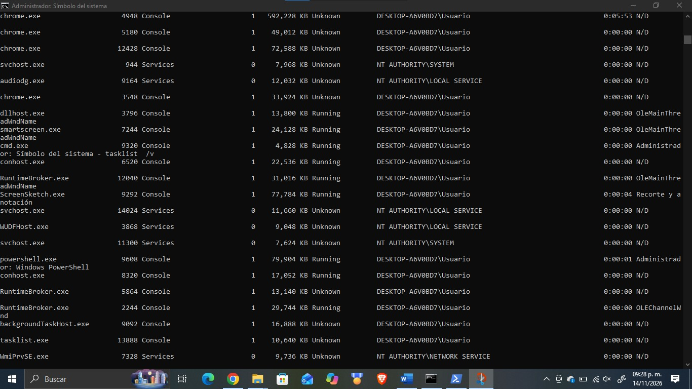
Resultado. El archivo 02_procesos.txt pesa unos 50 KB. En las capturas se distinguen tres grupos de procesos:
Procesos del sistema. System Idle Process, System, Secure System, Registry, smss.exe, csrss.exe, wininit.exe, services.exe, lsass.exe, winlogon.exe, fontdrvhost.exe, dwm.exe y numerosos svchost.exe. Son componentes normales de Windows 10; los que corren como NT AUTHORITY\SYSTEM, LOCAL SERVICE o NETWORK SERVICE pertenecen a la sesión 0 (Services).
Procesos del usuario. Varios chrome.exe (el principal usa 592,228 KB, unos 578 MB, y 0:05:53 de CPU), dllhost.exe, smartscreen.exe, RuntimeBroker.exe y ScreenSketch.exe («Recorte y anotación»), todos del usuario DESKTOP-A6V0BD7\Usuario en la sesión 1 (Console).
Procesos del analista. cmd.exe (PID 9320) y powershell.exe (PID 9608), con los títulos «Administrador: Símbolo del sistema - tasklist /v» y «Administrador: Windows PowerShell», junto con conhost.exe y el propio tasklist.exe (PID 13888). Esto muestra que la adquisición modifica el estado del sistema y deja huellas: los programas del investigador aparecen en la evidencia y deben distinguirse de los demás.
Importancia y límites. La lista de procesos permite detectar programas desconocidos, procesos con nombres que imitan a los de Windows, o procesos que consumen muchos recursos (por ejemplo, un minero de criptomonedas). tasklist no muestra el proceso padre (PPID), la ruta del ejecutable ni su firma digital, así que para sospechar de un proceso hay que complementarlo con Get-CimInstance Win32_Process o con herramientas como Process Explorer. En las capturas no se identifica ningún proceso evidentemente malicioso.
Punto 3. Servicios: CMD frente a PowerShell
Los servicios se listaron primero desde CMD con sc query y después desde PowerShell con Get-Service (figuras 7 y 8):
sc query > 03_servicios_cmd.txt && type 03_servicios_cmd.txt
Get-Service | Out-File 03_servicios_ps.txt; Get-Service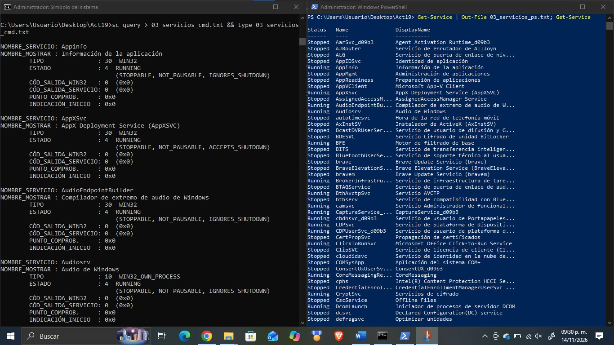
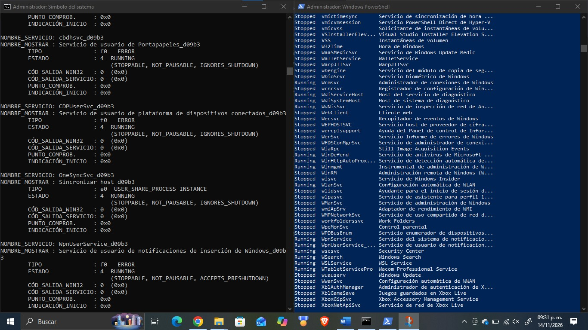
Resultado. Ambos comandos consultan al Administrador de control de servicios (SCM) de Windows, por lo que describen los mismos servicios, pero con otro formato y con otro alcance. La tabla 2 resume las diferencias observadas.
| Aspecto | sc query (CMD) | Get-Service (PowerShell) |
|---|---|---|
| Servicios mostrados | Solo los activos (en las capturas todos aparecen como RUNNING) | Todos: Running y Stopped |
| Datos por servicio | Nombre, nombre para mostrar, tipo, estado, códigos de salida, punto de comprobación e indicación de inicio | Estado (Status), nombre (Name) y nombre para mostrar (DisplayName) |
| Formato | Texto plano de varias líneas por servicio | Tabla de una línea por servicio; el nombre largo se corta con «...» |
| Tipo de salida | Texto; solo se puede filtrar con findstr | Objetos que se pueden filtrar, ordenar y exportar (Where-Object, Export-Csv) |
| Servicios de usuario | Aparecen con tipo f0 «ERROR» o e0, porque sc no decodifica esos tipos | Aparecen con su estado, por ejemplo CDPUserSvc_d09b3 |
Análisis del resultado. En ambas listas se observan servicios normales de Windows y de programas instalados: WinDefend (antivirus de Microsoft) en ejecución, WSLService (Subsistema de Windows para Linux), WTabletServicePro (tableta Wacom), servicios de actualización de Brave en estado detenido y componentes de Hyper-V detenidos. También aparecen servicios por usuario cuyo nombre termina con un sufijo variable (_d09b3), como CDPUserSvc, OneSyncSvc, cbdhsvc y WpnUserService: Windows los crea para cada sesión de usuario, así que el sufijo cambia en cada inicio de sesión y no es una señal de alarma. No se ve ningún servicio con nombre extraño en las capturas; el análisis completo requeriría revisar los archivos exportados.
Una limitación de la salida de PowerShell es que los nombres largos aparecen cortados con «...», también en el archivo de salida. Para conservar el texto completo conviene usar Get-Service | Format-Table -AutoSize -Wrap o exportar a CSV.
Punto 4. Usuarios con sesión activa
Para saber quién está conectado ahora se usó query user (figura 9). El comando consulta los Servicios de Escritorio remoto y lista las sesiones, locales o remotas, abiertas en el equipo:
query user > 04_usuarios_activos.txt && type 04_usuarios_activos.txt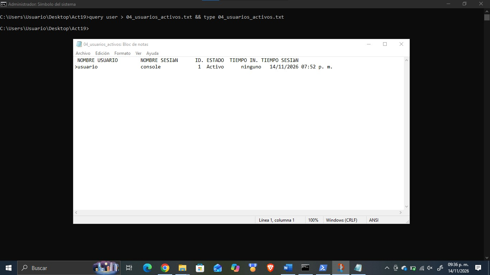
Resultado. Hay una sola sesión: el usuario «usuario» en la sesión «console», con ID 1, estado «Activo», tiempo de inactividad «ninguno» y hora de inicio de sesión 14/11/2026 07:52 p. m. Como la sesión es «console», se trata de un inicio de sesión local, en el teclado del equipo, y no hay sesiones remotas (RDP). La hora de inicio de sesión es un minuto posterior al arranque del sistema (07:51:11 p. m., según systeminfo).
Importancia. Permite saber quién estaba usando el equipo cuando se tomó la evidencia y si hay alguien conectado de forma remota. En esta captura el contenido del archivo se abrió en el Bloc de notas para mostrarlo (el texto se ve con caracteres mal codificados, «SESIàN», por la diferencia de páginas de códigos entre CMD y el Bloc de notas, sin afectar los datos).
Punto 5. Usuarios que alguna vez iniciaron sesión
Para los usuarios que alguna vez iniciaron sesión se usó primero la herramienta NetUsers, incluida en la carpeta de la actividad (figura 10):
.\NetUsers\NetUsers.exe > 05_usuarios_historicos.txt && type 05_usuarios_historicos.txt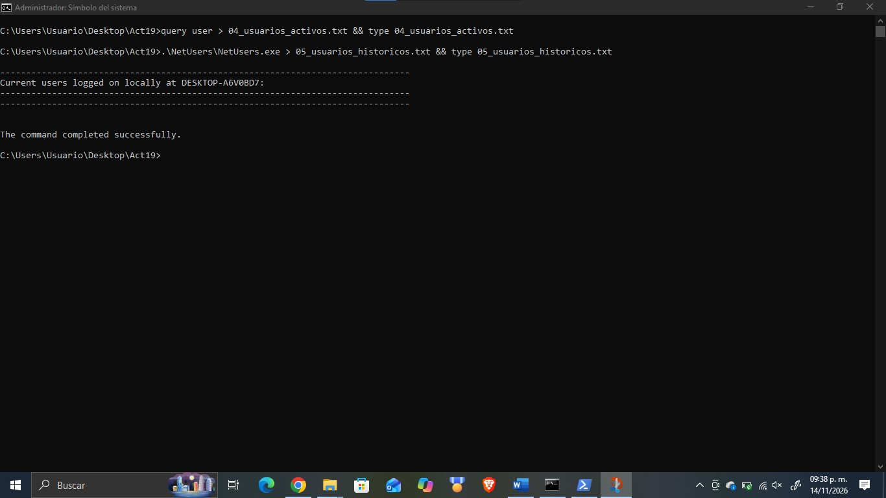
Resultado. La herramienta muestra el encabezado «Current users logged on locally at DESKTOP-A6V0BD7:» sin ningún usuario y termina con «The command completed successfully». Sin parámetros, NetUsers solo lista a los usuarios con sesión local en ese momento, por lo que esta salida no es el historial que pide el punto. Los puntos siguientes se ejecutaron el 15/11/2026, ya que este punto se completó después de la adquisición principal.
Para obtener el historial se repitió la herramienta con la opción /history (figura 11):
.\NetUsers\NetUsers.exe /history > 05_usuarios_historicos.txt && type 05_usuarios_historicos.txt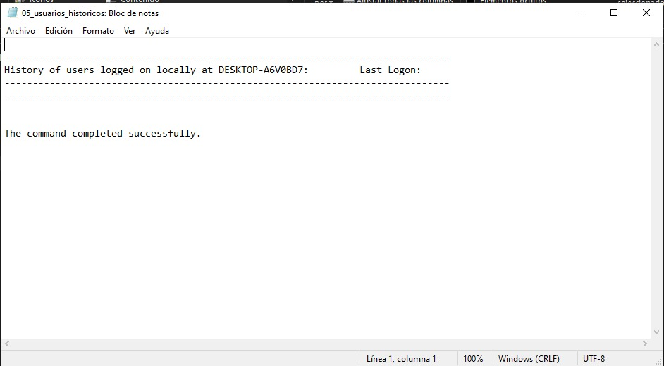
Resultado. El archivo muestra el encabezado «History of users logged on locally at DESKTOP-A6V0BD7:» con la columna «Last Logon», pero sin ninguna fila, y termina con «The command completed successfully». Es decir, NetUsers tampoco encontró historial de inicios de sesión, probablemente porque es una herramienta de 2007 (sus archivos tienen fecha de marzo de 2007) y no lee bien los perfiles de Windows 10. Por eso se obtuvo el historial con dos fuentes alternativas del propio sistema.
La primera fuente fue el proveedor WMI Win32_UserProfile, que lista los perfiles de usuario del equipo (figura 12):
Get-CimInstance Win32_UserProfile | Select-Object LocalPath,LastUseTime | Out-File 05_usuarios_historicos_ps.txt; Get-Content 05_usuarios_historicos_ps.txt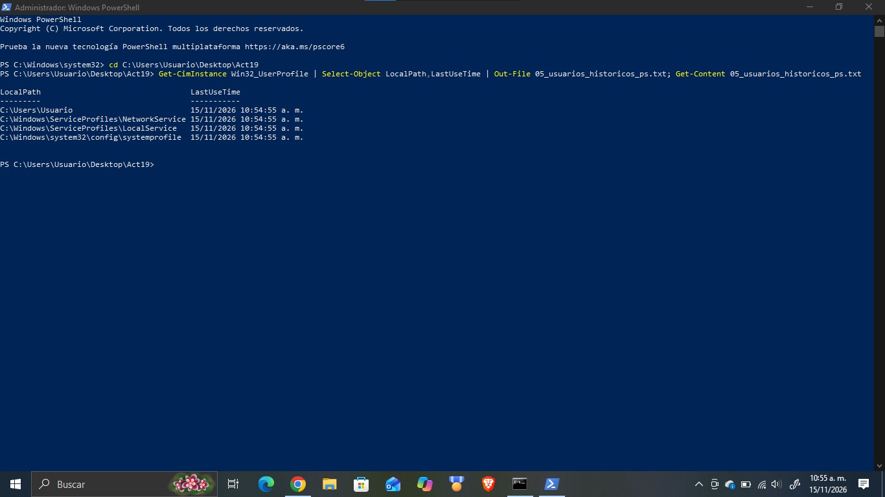
Resultado. Hay cuatro perfiles: C:\Users\Usuario (el único perfil de una persona) y tres perfiles del sistema (C:\Windows\ServiceProfiles\NetworkService, C:\Windows\ServiceProfiles\LocalService y C:\Windows\system32\config\systemprofile). Los cuatro muestran el mismo LastUseTime, 15/11/2026 10:54:55 a. m., muy cercano a la hora de la consulta (10:55 a. m.); esto indica que Windows reporta el momento en que el perfil está cargado y no la fecha real del último inicio de sesión, por lo que este campo no sirve por sí solo como historial.
La segunda fuente fue el Registro, en la llave ProfileList, donde Windows guarda un registro por cada perfil que ha iniciado sesión en el equipo (figura 13):
reg query "HKLM\SOFTWARE\Microsoft\Windows NT\CurrentVersion\ProfileList" /s > 05_perfiles_registro.txt && type 05_perfiles_registro.txt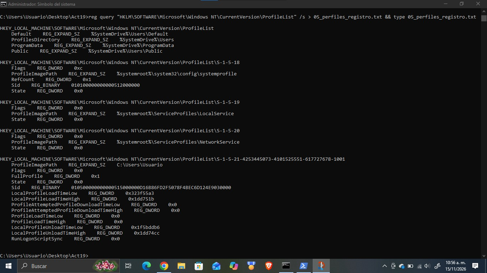
Resultado. La llave tiene tres perfiles del sistema (S-1-5-18, S-1-5-19 y S-1-5-20) y un único perfil de usuario: el SID S-1-5-21-4253445073-4101525551-617727678-1001, cuya ruta es C:\Users\Usuario. Este SID es el mismo de la carpeta de la Papelera de reciclaje que aparece en el árbol de directorios (figura 41), lo que confirma que ese usuario es el único que ha usado el equipo. El valor FullProfile es 1 y no hay perfiles temporales ni de otras cuentas.
Además, el registro conserva las marcas de tiempo de carga y descarga del perfil, guardadas como estructuras FILETIME separadas en una parte baja y una alta. Se decodificaron igual que la fecha de instalación del sistema (intervalos de 100 nanosegundos desde 1601): LocalProfileLoadTime (0x01dd751b 323f55a3) corresponde al 15/11/2026 a las 10:05:55 a. m. (16:05:55 UTC), y LocalProfileUnloadTime (0x01dd74cc 1f5bddb6), al 15/11/2026 a las 12:39:53 a. m. (06:39:53 UTC). Es decir, el usuario cerró sesión (o apagó el equipo) de madrugada y volvió a iniciar sesión a las 10:05 a. m., después de la adquisición principal.
Importancia. El historial de perfiles permite saber qué cuentas existieron y cuándo se usaron por última vez, lo que ayuda a detectar cuentas creadas por un atacante. Una cuenta nueva y desconocida aparecería como otro SID en ProfileList. En un caso real se complementaría con los eventos de inicio de sesión (4624) del registro Security. Un dato importante es que el reinicio del equipo entre la adquisición principal y este punto implica que los datos volátiles ya no son los mismos: por eso el orden de volatilidad exige hacer todas las capturas antes de apagar o reiniciar.
Punto 6. Información de red
La configuración de red se obtuvo con ipconfig /all, que muestra el detalle de todos los adaptadores, incluso los desconectados (figuras 14 y 15):
ipconfig /all > 06_red.txt && type 06_red.txt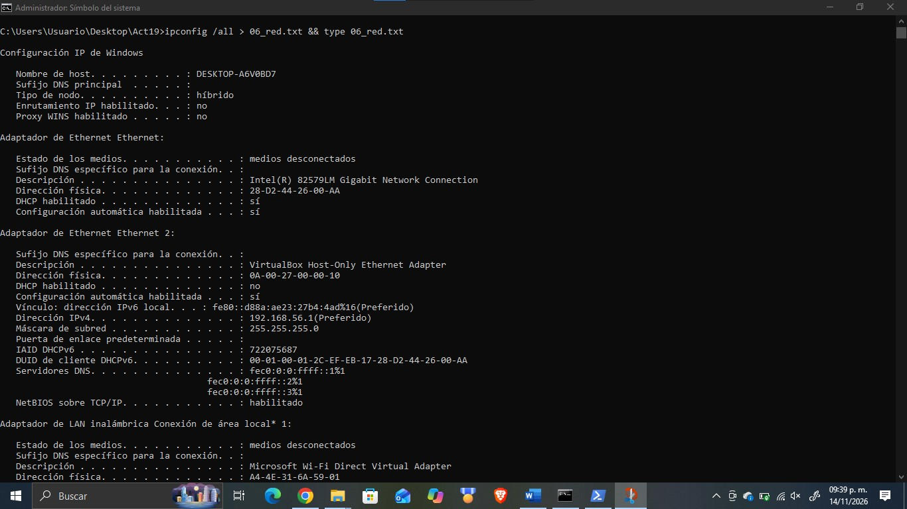
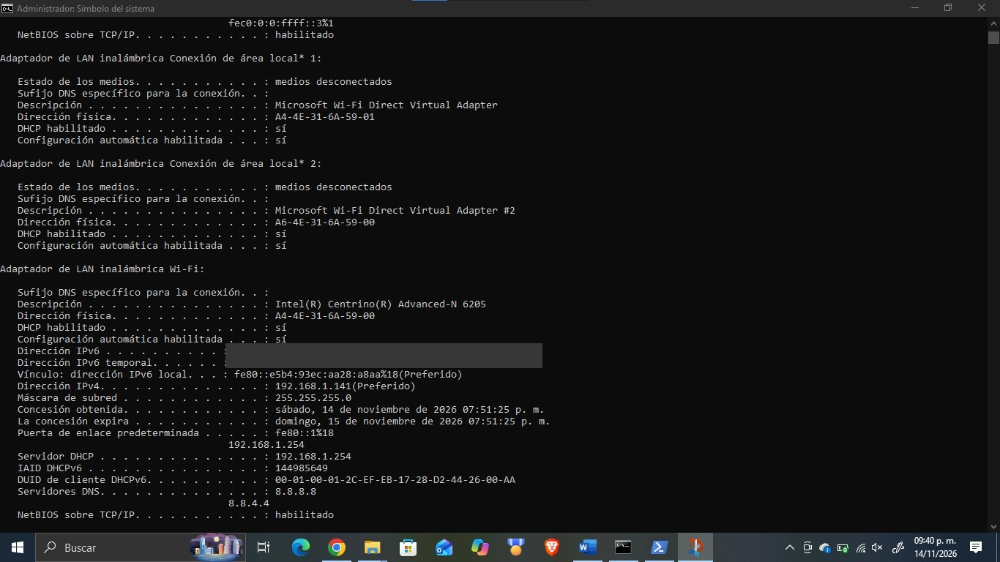
| Adaptador | Estado | Dirección física (MAC) | IPv4 |
|---|---|---|---|
| Ethernet (Intel 82579LM Gigabit) | Medios desconectados | 28-D2-44-26-00-AA | Sin dirección |
| Ethernet 2 (VirtualBox Host-Only) | Activo, DHCP no | 0A-00-27-00-00-10 | 192.168.56.1 / 255.255.255.0 |
| Wi-Fi Direct Virtual Adapter (x2) | Medios desconectados | A4-4E-31-6A-59-01 y A6-4E-31-6A-59-00 | Sin dirección |
| Wi-Fi (Intel Centrino Advanced-N 6205) | Conectado, DHCP sí | A4-4E-31-6A-59-00 | 192.168.1.141 / 255.255.255.0 |
Resultado. El nombre del host es DESKTOP-A6V0BD7, sin sufijo DNS principal, con tipo de nodo «híbrido» y sin enrutamiento IP. La conexión activa es la del adaptador Wi-Fi: la dirección IPv4 es 192.168.1.141 (más una dirección IPv6 global y una temporal), la puerta de enlace y el servidor DHCP es 192.168.1.254, y los servidores DNS son 8.8.8.8 y 8.8.4.4 (DNS públicos de Google). La concesión DHCP se obtuvo el sábado 14/11/2026 a las 07:51:25 p. m. y expira el domingo 15/11/2026 a la misma hora. Además existe un adaptador virtual de VirtualBox con la red 192.168.56.0/24.
Importancia. Identifica al equipo en la red (IP, MAC, nombre), cómo se conectó (por Wi-Fi) y con qué servidores. Con la IP y la MAC se pueden pedir registros al router o al proveedor y ubicar al equipo en la red. Los servidores DNS de Google indican una configuración manual, porque un enrutador doméstico suele entregar sus propios DNS; en una investigación se verifica que no los haya cambiado un malware para redirigir el tráfico. Por último, la hora de inicio de la concesión (07:51:25 p. m.) coincide con el arranque del sistema (07:51:11 p. m.).
Punto 7. Nombres NetBIOS
NetBIOS es el protocolo de nombres que Windows usa en redes locales. Se consultaron la tabla de nombres locales (-n) y la caché de nombres remotos (-c), anexando ambas al mismo archivo (figuras 16 y 17):
nbtstat -n > 07_netbios.txt && nbtstat -c >> 07_netbios.txt && type 07_netbios.txt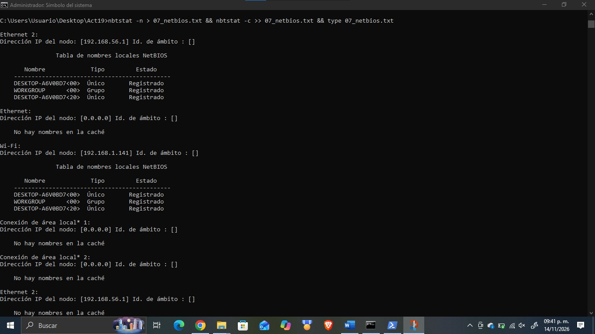
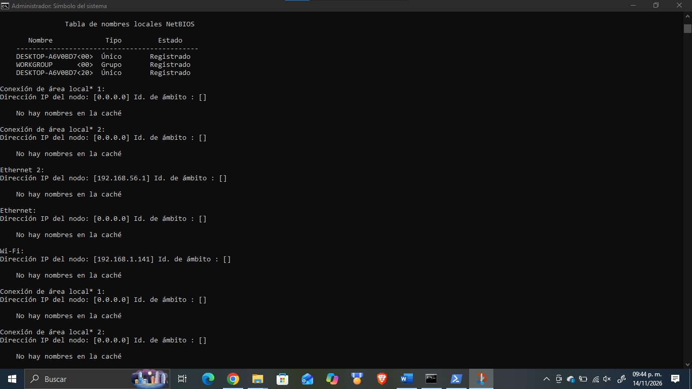
| Nombre | Tipo | Significado |
|---|---|---|
DESKTOP-A6V0BD7<00> | Único | Servicio de estaciones de trabajo (nombre del equipo) |
WORKGROUP<00> | Grupo | Grupo de trabajo al que pertenece el equipo |
DESKTOP-A6V0BD7<20> | Único | Servicio de servidor (compartición de archivos e impresoras) |
Resultado. Los nombres NetBIOS asignados son DESKTOP-A6V0BD7 (tipos <00> y <20>) y el grupo WORKGROUP. Están registrados en las interfaces Ethernet 2 (192.168.56.1) y Wi-Fi (192.168.1.141); en las demás interfaces no hay nombres. La caché de nombres remotos está vacía, así que el equipo no había resuelto recientemente nombres de otros equipos. Importancia: el grupo WORKGROUP confirma que el equipo no pertenece a un dominio de Active Directory (coincide con systeminfo), y el nombre <20> indica que el equipo ofrece compartición de archivos en la red, lo que se relaciona con los recursos compartidos del punto 15.
Punto 8. Conexiones establecidas
Las conexiones se obtuvieron con netstat -ano: -a muestra todas las conexiones y puertos en escucha, -n muestra direcciones y puertos en forma numérica (sin resolver nombres) y -o agrega el PID del proceso propietario (figuras 18 a 20):
netstat -ano > 08_conexiones.txt && type 08_conexiones.txt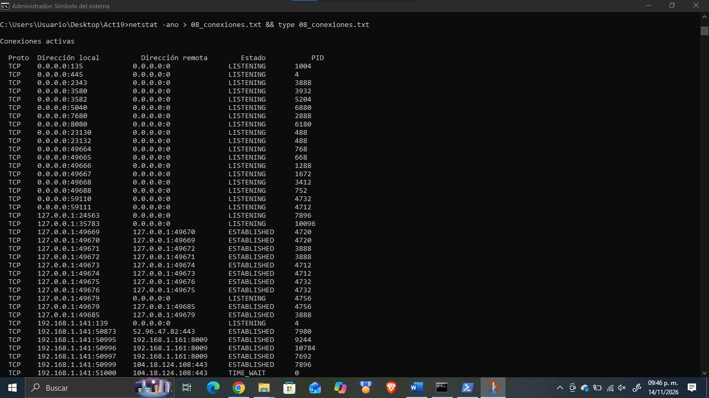
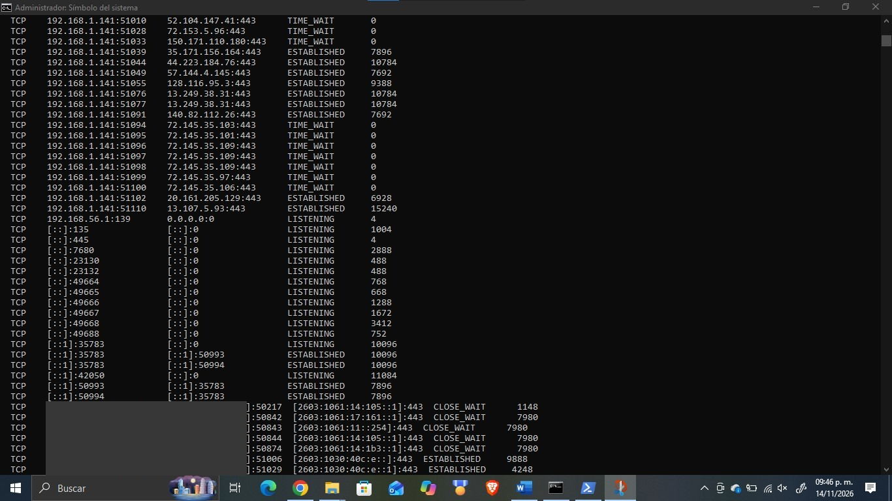
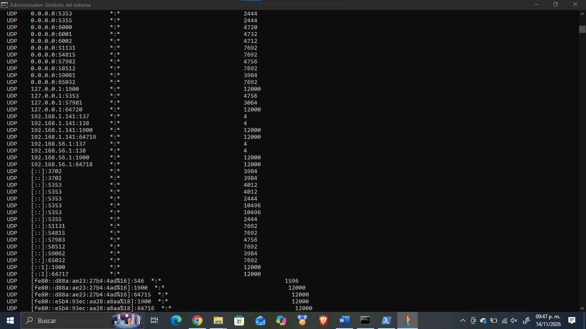
Resultado. Los estados que aparecen son LISTENING (puerto abierto esperando conexiones), ESTABLISHED (conexión activa), TIME_WAIT y CLOSE_WAIT (conexiones en cierre). Entre las conexiones establecidas se observan, en la IP local 192.168.1.141:
Conexiones externas. Hacia 52.96.47.82:443 (PID 7980), 35.171.156.164:443 (7896), 44.223.184.76:443 (10784), 57.144.4.145:443 (7692), 128.116.95.3:443 (9388), 13.249.38.31:443 (10784), 140.82.112.26:443 (7692), 20.161.205.129:443 (6928), 13.107.5.93:443 (15240) y 104.18.124.108:443 (7896). Todas usan el puerto 443 (HTTPS, tráfico cifrado), lo habitual en navegación y aplicaciones en la nube.
Conexiones locales. Hacia 192.168.1.161:8009 desde los PID 9244, 10784 y 7692. Es una dirección de la propia red local (aparece en la tabla ARP, punto 11) y el puerto 8009 se usa habitualmente en dispositivos con Google Cast, de modo que podría tratarse de un televisor o dispositivo multimedia, lo cual debe confirmarse.
Conexiones en cierre. Hacia 72.145.35.97 a 72.145.35.109 (puerto 443) en estado TIME_WAIT; se relacionan con la caché DNS del punto 10.
Importancia. Las conexiones externas son la forma de detectar comunicación con un servidor de comando y control, o la salida de datos. Con el PID se vincula cada conexión con un proceso (punto 9), y con un WHOIS de la IP remota se identifica a su propietario. No se han resuelto las IP remotas en este análisis, de manera que son datos por verificar.
Punto 9. Aplicaciones y puertos
Para saber qué aplicación abrió cada puerto se usó netstat -anob; la opción -b muestra el ejecutable (y los servicios) que creó cada conexión o puerto y exige permisos de administrador (figuras 21 a 23):
netstat -anob > 09_apps_puertos.txt && type 09_apps_puertos.txt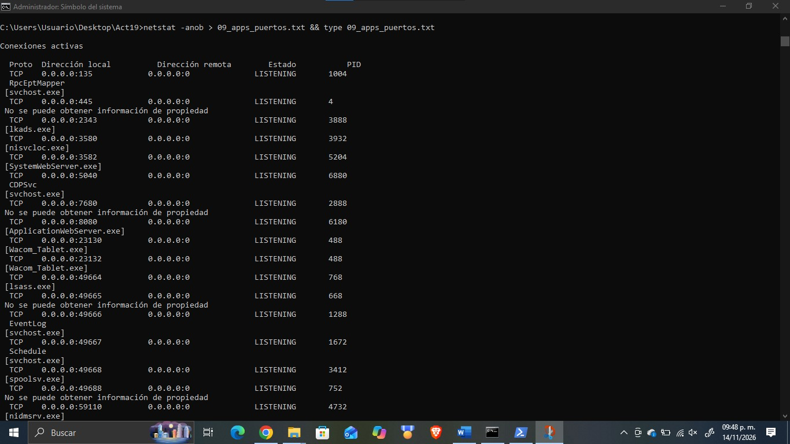
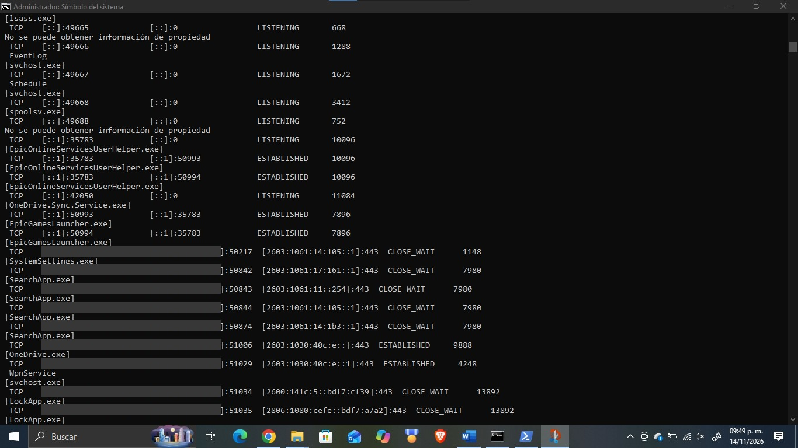
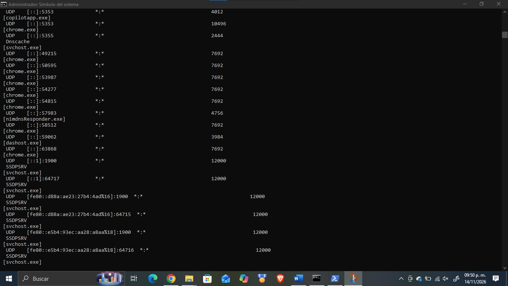
Resultado. La tabla 5 relaciona los puertos en escucha más relevantes con su proceso. Los PID coinciden con los de la lista de procesos del punto 2 (por ejemplo, 768 es lsass.exe, 668 es wininit.exe, 752 es services.exe y 1004 es un svchost.exe), lo que permite correlacionar ambas evidencias.
| Puerto | Proceso (PID) | Observación |
|---|---|---|
135 | svchost.exe, RpcEptMapper (1004) | Asignador de extremos RPC de Windows |
445 | System (4) | SMB, compartición de archivos; sin información de propiedad |
2343, 3580, 3582, 8080 | lkads.exe, nisvcloc.exe, SystemWebServer.exe, ApplicationWebServer.exe | Escuchan en todas las interfaces (0.0.0.0); por sus nombres parecen componentes de software de National Instruments, por verificar |
5040 | svchost.exe, CDPSvc (6880) | Plataforma de dispositivos conectados |
7680 | PID 2888 | Sin información de propiedad (se asocia con la optimización de entrega de Windows Update) |
23130, 23132 | Wacom_Tablet.exe (488) | Controlador de la tableta Wacom |
49664 a 49668, 49688 | lsass.exe, wininit (668), svchost EventLog y Schedule, spoolsv.exe, services.exe (752) | Puertos dinámicos RPC de servicios del sistema |
59110 | nidmsrv.exe (4732) | Servicio de software de National Instruments, por verificar |
35783 (::1) | EpicOnlineServicesUserHelper.exe (10096) | Comunicación local con Epic Games Launcher |
42050 (::1) | OneDrive.Sync.Service.exe (11084) | Sincronización de OneDrive |
Importancia. Es el eslabón entre una conexión de red y el programa responsable. Los mensajes «No se puede obtener información de propiedad» aparecen en procesos protegidos del sistema (System, wininit, services) a los que netstat no puede acceder, y no son un indicio por sí mismos. Lo relevante para una investigación son los programas de terceros que escuchan en todas las interfaces (0.0.0.0), como los servicios web de los puertos 3582 y 8080, que amplían la superficie de ataque y deben revisarse (ruta, firma digital y regla del firewall).
Punto 10. Dominios consultados (caché DNS)
La caché del resolvedor DNS guarda los nombres de dominio que el equipo consultó recientemente. Se obtuvo con ipconfig /displaydns (figuras 24 y 25):
ipconfig /displaydns > 10_dns_dominios.txt && type 10_dns_dominios.txt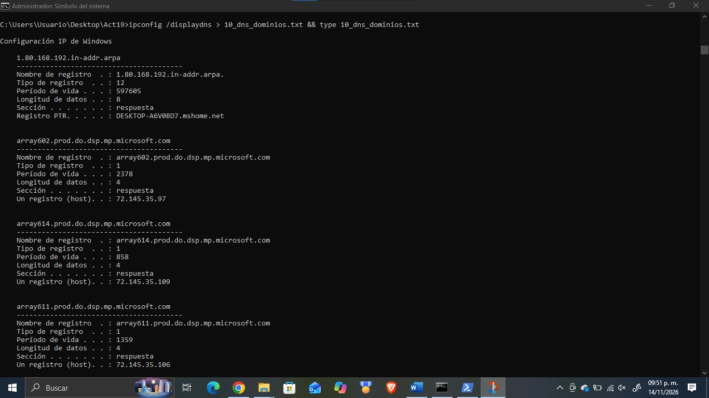
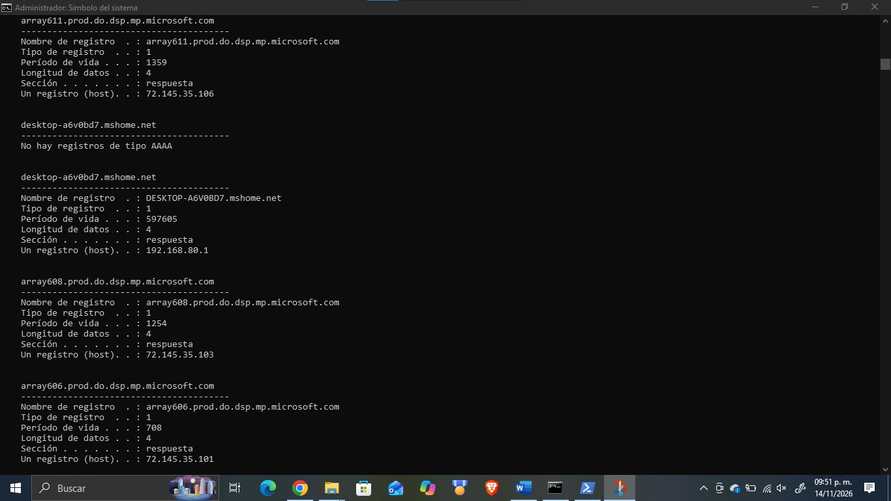
Resultado. La caché es pequeña (el archivo pesa unos 3 KB). Los registros visibles son: 1) un registro PTR de 1.80.168.192.in-addr.arpa que apunta a DESKTOP-A6V0BD7.mshome.net, y el registro A desktop-a6v0bd7.mshome.net con la IP 192.168.80.1 (una red virtual local; mshome.net es el sufijo que Windows usa para los adaptadores virtuales); 2) los dominios array602, array606, array608, array611 y array614.prod.do.dsp.mp.microsoft.com, que resuelven a las IP 72.145.35.97, .101, .103, .106 y .109 con tiempos de vida entre 708 y 2,378 segundos. Ese dominio pertenece al servicio de Optimización de entrega (Delivery Optimization) de Windows Update.
Importancia. Muestra con qué dominios se comunicó el equipo hace poco. Es una evidencia muy volátil (los registros expiran según su tiempo de vida) y no sustituye al historial del navegador, porque Chrome puede resolver nombres por su cuenta y los registros caducan. En una investigación, los dominios sospechosos (por ejemplo, de malware o de phishing) se buscan en esta caché.
Punto 11. Tabla ARP
La tabla ARP guarda la relación entre las direcciones IP (lógicas) y las direcciones MAC (físicas) de los equipos con los que el sistema se comunicó recientemente en su red local (figura 26):
arp -a > 11_tabla_arp.txt && type 11_tabla_arp.txt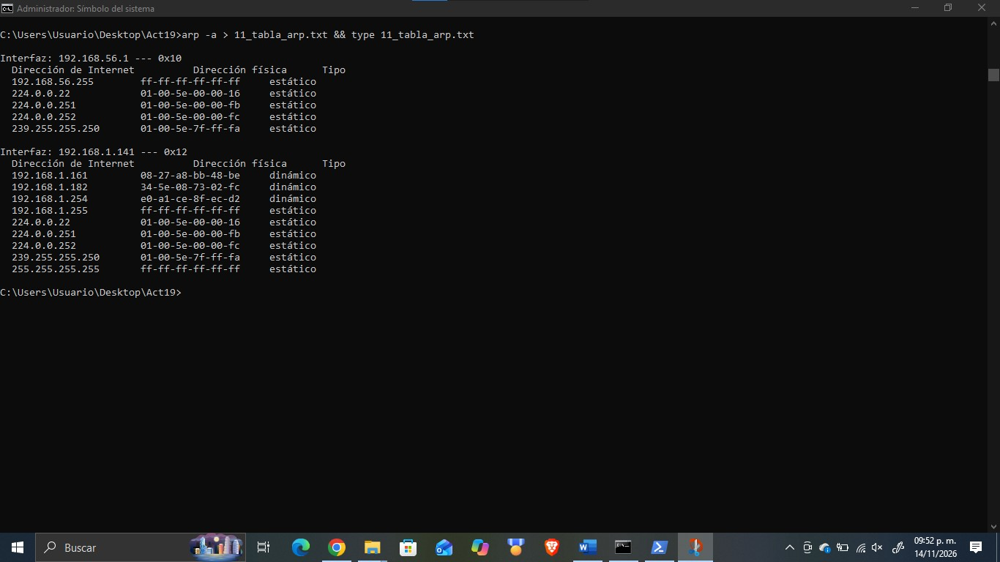
| Dirección IP | Dirección MAC | Interpretación |
|---|---|---|
192.168.1.254 | e0-a1-ce-8f-ec-d2 | Puerta de enlace y servidor DHCP (el router) |
192.168.1.161 | 08-27-a8-bb-48-be | Dispositivo de la red local; destino de las conexiones al puerto 8009 |
192.168.1.182 | 34-5e-08-73-02-fc | Otro dispositivo de la red local |
Resultado. La interfaz 192.168.56.1 (red virtual de VirtualBox) solo tiene entradas estáticas de difusión y multidifusión. La interfaz 192.168.1.141 tiene tres vecinos dinámicos (tabla 6) y las entradas estáticas habituales (192.168.1.255, 224.0.0.x, 239.255.255.250 y 255.255.255.255). La dirección 192.168.1.254 coincide con la puerta de enlace de ipconfig, y 192.168.1.161 es el destino de las conexiones al puerto 8009 vistas en netstat.
Importancia. Revela los equipos vecinos con los que se habló y su MAC, lo que ayuda a reconstruir la red y a detectar movimientos laterales o ataques de suplantación ARP (dos IP con la misma MAC o una MAC que cambia). Las MAC permiten identificar al fabricante por sus tres primeros bytes (OUI). Es una caché volátil, que se vacía en pocos minutos.
Punto 12. Redes WiFi guardadas
Windows guarda un perfil por cada red inalámbrica a la que se conectó. Se listaron con netsh wlan show profiles (figura 27):
netsh wlan show profiles > 12_perfiles_wifi.txt && type 12_perfiles_wifi.txt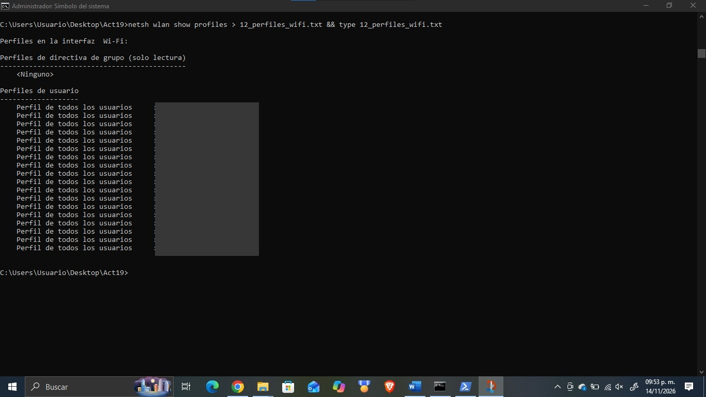
Resultado. En la interfaz Wi-Fi hay 18 perfiles de usuario, todos aplicados a todos los usuarios, y ninguno de directiva de grupo. Los nombres (SSID) se ocultaron en la captura por privacidad. Como ejemplo del detalle que se puede consultar, se mostró el perfil de la red de la universidad con la opción key=clear (figura 28):
netsh wlan show profile "CID_UPSLP" key=clear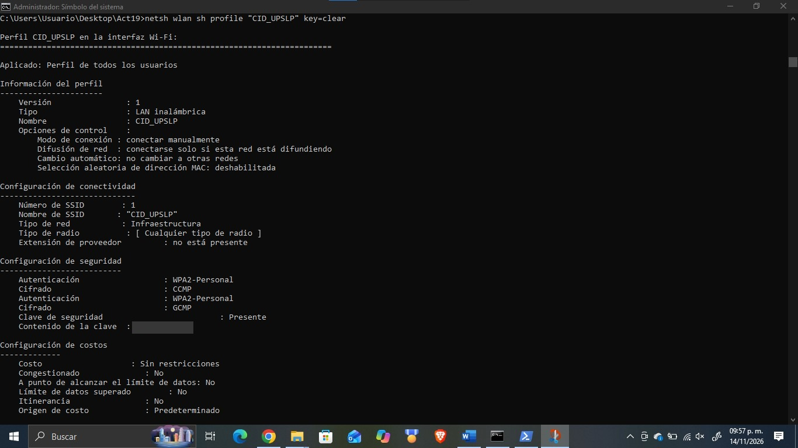
El perfil muestra conexión manual, tipo de red de infraestructura, autenticación WPA2-Personal con cifrado CCMP, y «Clave de seguridad: Presente». Con la opción key=clear, Windows muestra la contraseña en texto claro a cualquier cuenta de administrador; en el reporte esta contraseña se ocultó.
Importancia. Es una evidencia clave de movilidad: muestra a qué redes se conectó el equipo (casa, escuela, puntos móviles) y, por tanto, dónde estuvo, y permite pedir los registros de esos puntos de acceso. También es un riesgo, porque quien tenga acceso de administrador puede recuperar las contraseñas de todas las redes guardadas, así que la contraseña expuesta debe tratarse como información confidencial.
Punto 13. Historial de comandos
El historial de comandos permite reconstruir lo que se ejecutó en el sistema. En CMD se usó doskey /history, que lista los comandos de esa ventana; en PowerShell se leyó el archivo del módulo PSReadLine, que guarda el historial entre sesiones (figuras 29 y 30):
doskey /history > 13_historial_cmd.txt && type 13_historial_cmd.txt
Get-Content (Get-PSReadLineOption).HistorySavePath > 13_historial_ps.txt; type 13_historial_ps.txt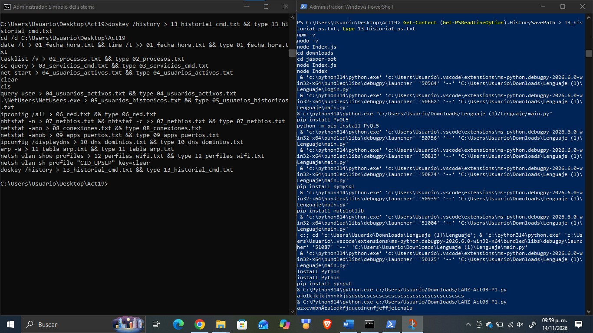
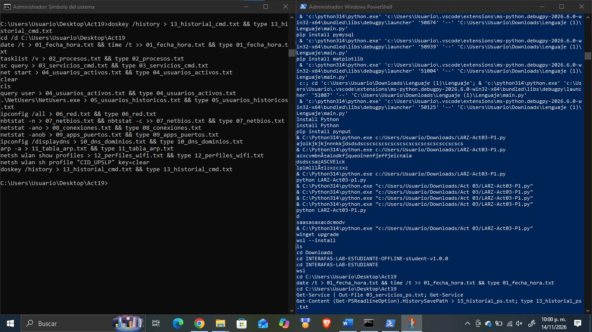
Resultado. El historial de CMD solo contiene los comandos de esta sesión: son los comandos de la propia adquisición (date, tasklist, sc query, netstat, ipconfig, arp, netsh...). Se ve también un error corregido: primero se ejecutó net start > 04_usuarios_activos.txt, y después query user sobrescribió el mismo archivo. El historial de PowerShell es más largo porque se conserva entre sesiones: incluye comandos de desarrollo (node Index.js, cd jasper-bot, pip install PyQt5, pymysql, matplotlib y pynput, ejecución de scripts de Python desde Visual Studio Code y desde Downloads), winget upgrade, wsl --install y, al final, los comandos de esta práctica.
Importancia y análisis. Es una de las fuentes que mejor describe la intención de un usuario. Aquí es coherente con un equipo de estudio y desarrollo: los comandos corresponden a trabajos de programación. El paquete pynput permite capturar el teclado y el ratón, y aunque tiene usos legítimos, en una investigación real se verificaría para qué se usó. También se aprecia que la adquisición contamina el historial: los comandos del investigador quedan mezclados con los del usuario y deben separarse al analizar. Además, el historial puede borrarse (Clear-History o eliminar el archivo), por lo que su ausencia también es un dato.
Punto 14. Unidades mapeadas
Las unidades de red mapeadas se consultaron con net use (figura 31):
net use > 14_unidades_mapeadas.txt && type 14_unidades_mapeadas.txt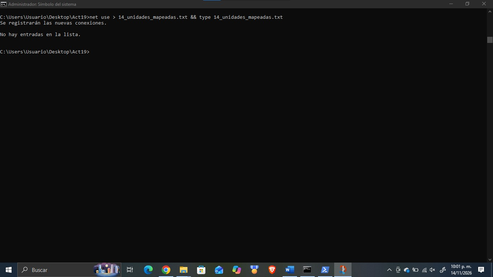
Resultado. El comando informa «No hay entradas en la lista»: el equipo no tiene unidades de red mapeadas ni conexiones a recursos remotos. El mensaje «Se registrarán las nuevas conexiones» indica que las conexiones nuevas se recordarán al reiniciar. Importancia: una unidad mapeada (por ejemplo, Z: hacia un servidor) mostraría a dónde se pudo copiar o de dónde se pudo tomar información; su ausencia descarta ese vector en este momento.
Punto 15. Recursos compartidos
Los recursos compartidos se consultaron con net share (figura 32):
net share > 15_recursos_compartidos.txt && type 15_recursos_compartidos.txt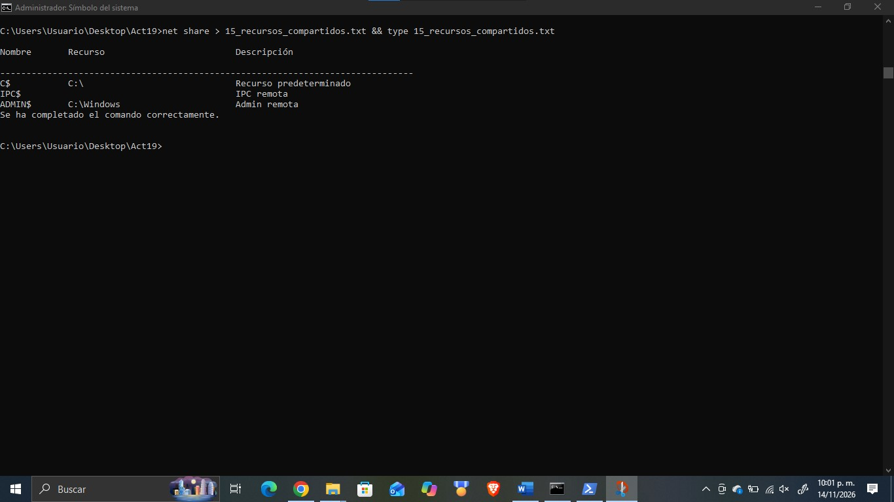
Resultado. Solo existen los recursos administrativos predeterminados de Windows: C$ (todo el disco C:\), IPC$ (comunicación entre procesos remota) y ADMIN$ (la carpeta C:\Windows). No hay carpetas compartidas por el usuario. Importancia: una carpeta compartida creada por el usuario o por un atacante sería una vía de exfiltración. Estos recursos administrativos solo son accesibles con credenciales de administrador, pero junto con el puerto 445 abierto (punto 9) conviene limitarlos con el firewall si no se necesitan.
Punto 16. Información del sistema
La información general del equipo se obtuvo con systeminfo (figuras 33 y 34):
systeminfo > 16_info_sistema.txt && type 16_info_sistema.txt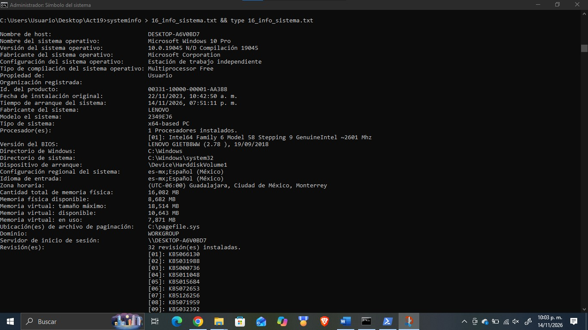
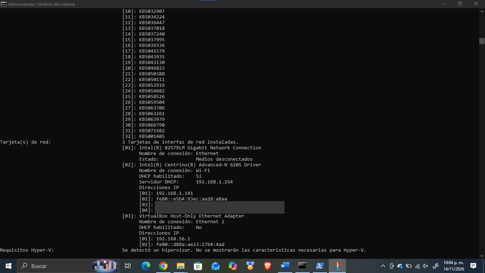
| Dato | Valor |
|---|---|
| Nombre de host | DESKTOP-A6V0BD7 |
| Sistema operativo | Microsoft Windows 10 Pro, versión 10.0.19045, compilación 19045 |
| Propietario / organización | Usuario / sin organización |
| Fecha de instalación original | 22/11/2023, 10:42:50 a. m. |
| Último arranque | 14/11/2026, 07:51:11 p. m. |
| Fabricante y modelo | LENOVO 2349EJ6 (x64) |
| Procesador | Intel64 Family 6 Model 58, 1 procesador, ~2601 MHz |
| BIOS | LENOVO G1ETB8WW (2.78), 19/09/2018 |
| Memoria física total / disponible | 16,082 MB / 8,682 MB |
| Zona horaria | (UTC-06:00) Guadalajara, Ciudad de México, Monterrey |
| Dominio / servidor de inicio de sesión | WORKGROUP / \\DESKTOP-A6V0BD7 |
| Revisiones (hotfixes) | 32 instaladas (de KB5066130 a KB5001405) |
| Tarjetas de red | 3 (Intel 82579LM, Intel Centrino Advanced-N 6205, VirtualBox Host-Only) |
Resultado. El equipo es una laptop Lenovo con Windows 10 Pro instalado el 22/11/2023 y reiniciado el 14/11/2026 a las 07:51:11 p. m. (unas 1.5 horas antes de empezar la adquisición). Pertenece a un grupo de trabajo (WORKGROUP), no a un dominio, y el mensaje «Se detectó un hipervisor» concuerda con la presencia de VirtualBox, Hyper-V y WSL vistos en servicios y comandos.
Importancia. Es el resumen de identidad del equipo: sirve para describirlo en el informe (marca, modelo, versión y fecha de instalación), calcular cuánto tiempo llevaba encendido, ver el nivel de parches y confirmar la zona horaria con la que interpretar las marcas de tiempo. Windows 10 llegó al fin de su soporte estándar el 14 de octubre de 2025, de modo que un equipo con esta versión (19045) sin actualizaciones extendidas queda más expuesto a vulnerabilidades nuevas; es un factor de riesgo a considerar, no una prueba de compromiso.
Punto 17. Tareas programadas
Las tareas programadas se listaron con schtasks. Los parámetros /query pide la consulta, /fo LIST da formato de lista y /v agrega el detalle completo (figuras 35 a 38):
schtasks /query /fo LIST /v > 17_tareas_programadas.txt && type 17_tareas_programadas.txt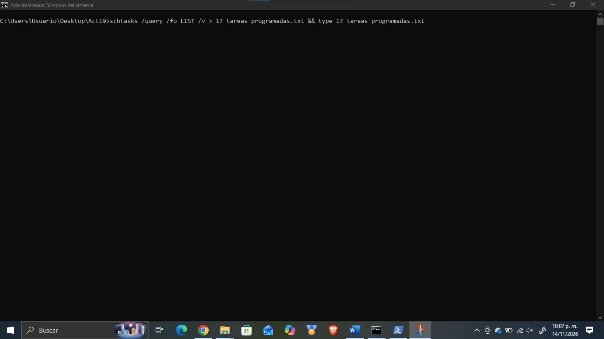
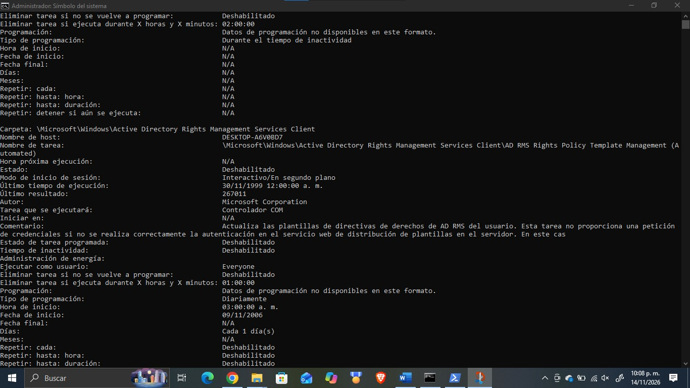
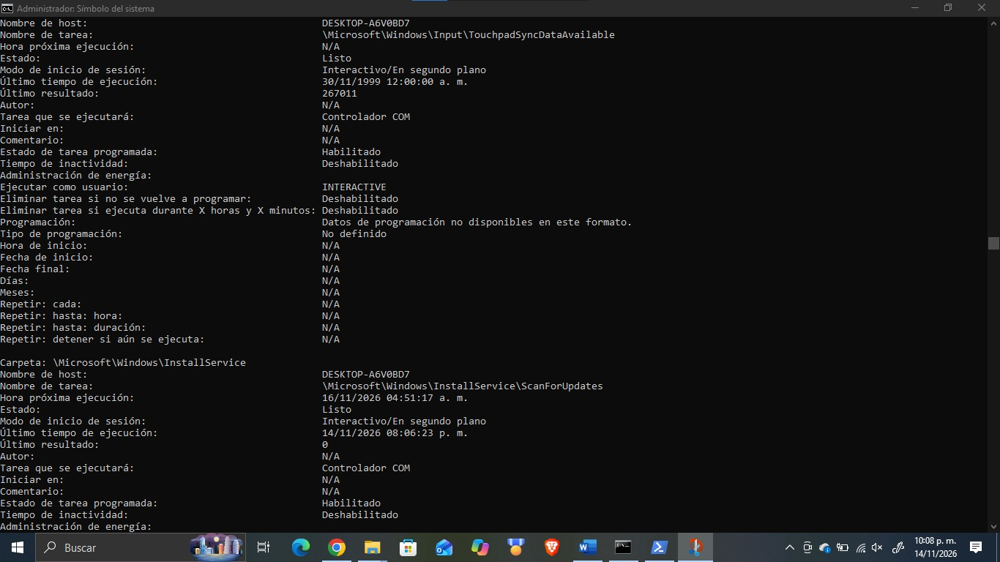
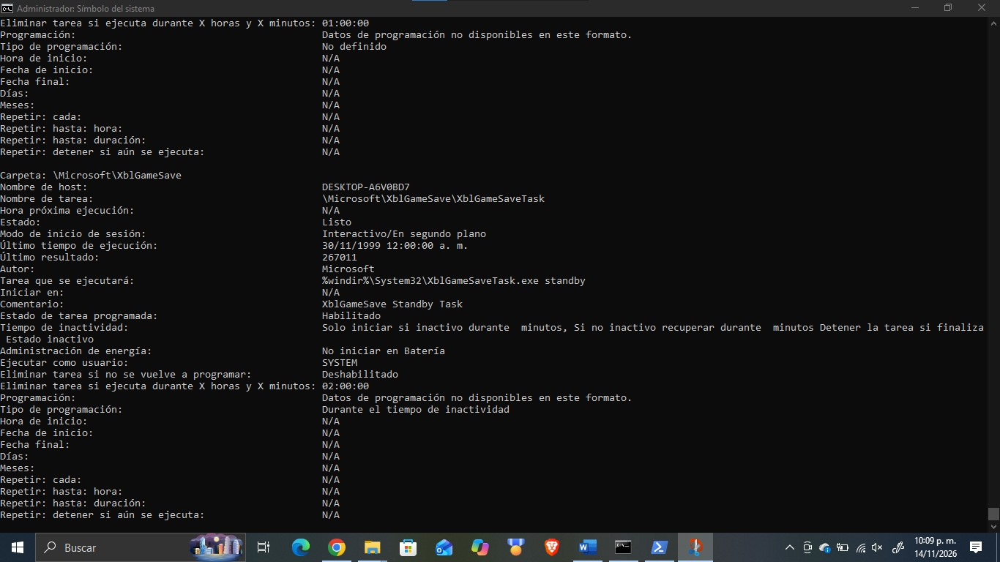
Resultado. El archivo de salida pesa unos 687 KB, por la gran cantidad de tareas propias de Windows 10. En las capturas se observan las tareas de la tabla 8, todas del propio sistema operativo (autor Microsoft o carpeta \Microsoft\Windows).
| Tarea | Estado | Última / próxima ejecución | Observación |
|---|---|---|---|
| AD RMS Rights Policy Template Management (Automated) | Deshabilitado | Nunca ejecutada (30/11/1999) | Tarea de Microsoft, sin ejecutarse |
| Input\TouchpadSyncDataAvailable | Listo | Nunca ejecutada (30/11/1999) | Sin horario definido |
| InstallService\ScanForUpdates | Listo | 14/11/2026 08:06:23 p. m. / 16/11/2026 04:51:17 a. m. | Resultado 0 (correcto) |
| XblGameSave\XblGameSaveTask | Listo | Nunca ejecutada (30/11/1999) | Se ejecuta como SYSTEM, en espera |
Interpretación. Varias tareas muestran como último tiempo de ejecución el 30/11/1999 y como último resultado 267011: es el valor que Windows usa para indicar que la tarea todavía no se ha ejecutado (SCHED_S_TASK_HAS_NOT_RUN, 0x41303), y no una fecha real. En cambio, ScanForUpdates sí tiene una ejecución reciente con resultado 0 (éxito) y una próxima programada.
Importancia. Las tareas programadas son un mecanismo clásico de persistencia: un atacante crea una tarea para que su programa se ejecute en cada inicio o cada cierto tiempo. En una revisión real se buscan las tareas cuyo autor no es Microsoft, las que ejecutan programas desde carpetas de usuario o temporales, scripts de PowerShell, y las que se ejecutan con privilegios SYSTEM. En las capturas revisadas no aparece ninguna de ese tipo; el archivo completo se puede filtrar, por ejemplo, con schtasks /query /fo CSV /v y findstr /v "Microsoft".
Punto 18. Exportación de registros de eventos
Los registros de eventos son el diario del sistema. Se exportaron con wevtutil epl (export-log) al Escritorio del usuario en estudio, en formato nativo .evtx para analizarlos después (figura 39):
wevtutil epl System "C:\Users\Usuario\Desktop\System_Logs.evtx"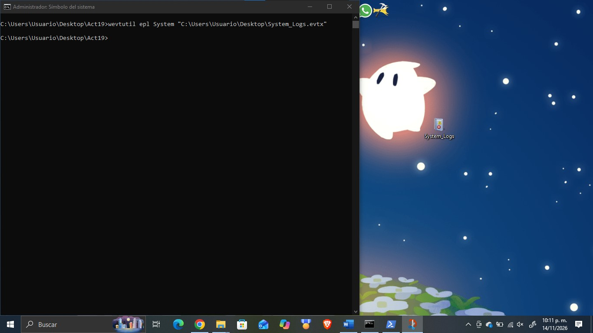
Resultado. El comando terminó sin errores (no muestra mensaje cuando tiene éxito) y en el Escritorio apareció el archivo System_Logs.evtx. El formato .evtx conserva la estructura completa de los eventos, lo que permite abrirlo después en el Visor de eventos o con herramientas de análisis.
Importancia. El registro System contiene, por ejemplo, el arranque y apagado del sistema, la instalación de servicios y los errores de controladores, y es la base para reconstruir qué pasó y cuándo. Se exportó el registro System; en un caso real también se exportan Application y, sobre todo, Security (inicios de sesión, creación de procesos y cuentas) y los registros de PowerShell y de Windows Defender.
Punto 19. Archivo hosts
El archivo hosts permite asociar manualmente nombres de dominio con direcciones IP y se consulta antes que el DNS. Se copió a la carpeta de evidencia y se mostró (figura 40):
copy C:\Windows\System32\drivers\etc\hosts 19_hosts.txt && type 19_hosts.txt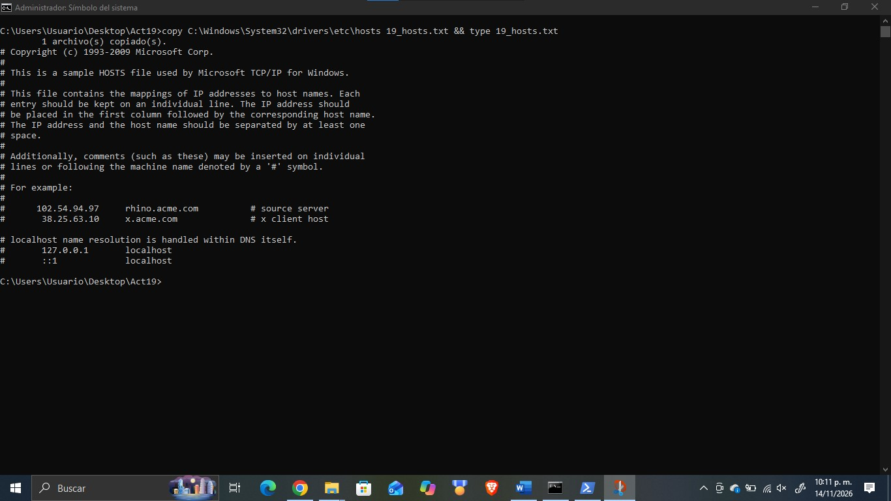
Resultado. El archivo solo tiene líneas de comentario (las que empiezan con #) con la explicación y ejemplos de Microsoft; no hay ninguna entrada activa, ni siquiera la de localhost, que ya resuelve el DNS. Además, la copia conserva la fecha de modificación del original: en la carpeta de trabajo, 19_hosts.txt aparece con fecha 07/12/2019 03:12 a. m. (figura 46), anterior a la instalación del sistema, lo que indica que el archivo no se ha modificado desde que se creó con la imagen de Windows.
Importancia. El malware modifica el archivo hosts para redirigir sitios (por ejemplo, de un banco hacia un sitio falso) o para bloquear los servidores de actualización de los antivirus. Un archivo sin entradas y sin modificaciones recientes descarta esa técnica en este equipo. Se usó copy en lugar de solo type para conservar el archivo como evidencia con su fecha original.
Punto 20. Árbol de directorios por fecha de creación
Para listar los directorios y archivos con su fecha de creación se usó dir con la opción /s (recursivo, incluye subcarpetas) y /t:c (muestra la fecha de creación en lugar de la de modificación). La salida se guardó en un archivo y se abrió en el Bloc de notas (figuras 41 a 44):
dir C:\ /s /t:c > 20_arbol_directorios.txt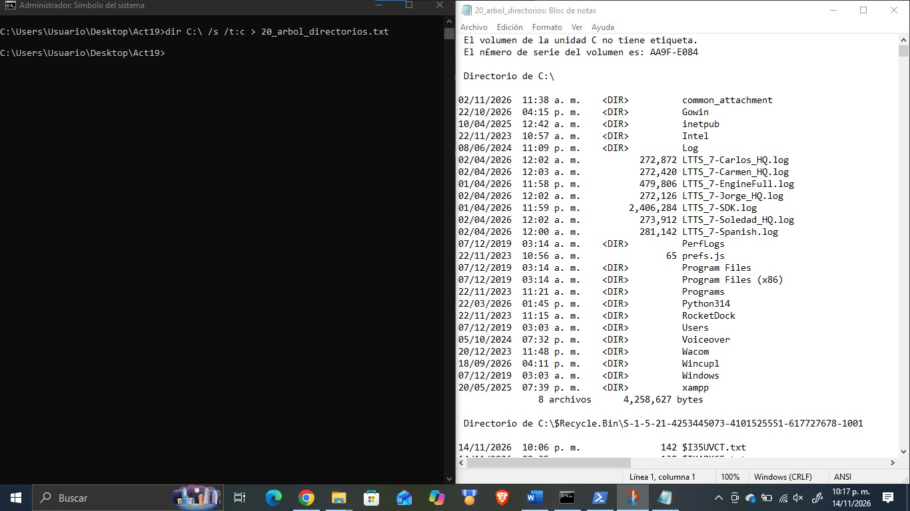
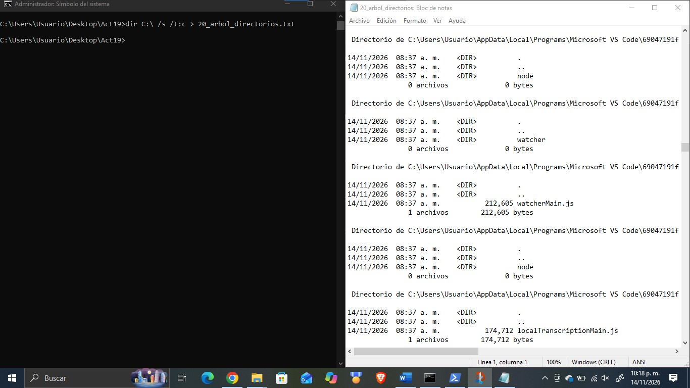
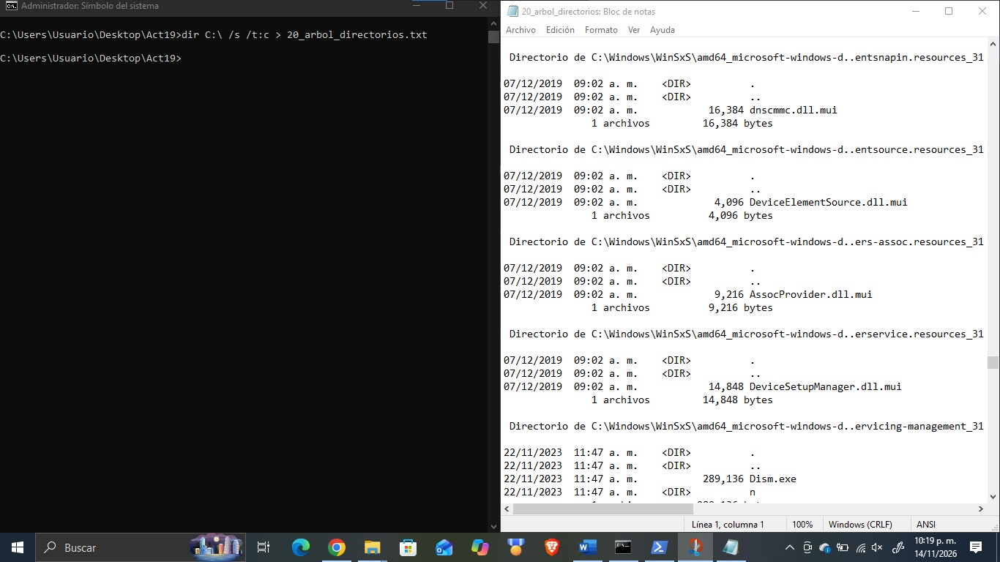
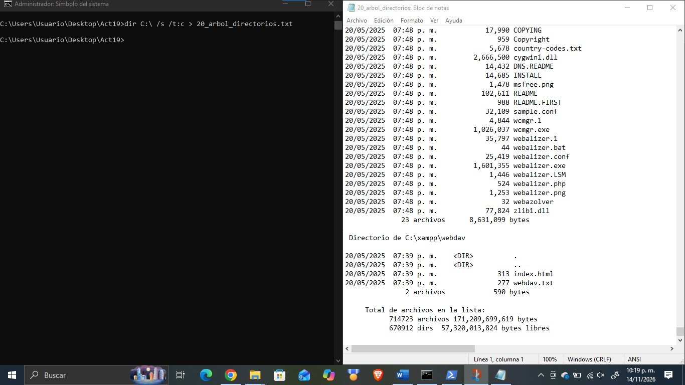
Resultado. Al final del listado, el sistema reporta un total de 714,723 archivos (171,209,699,619 bytes, unos 171 GB) y 670,912 directorios, con 57,320,013,824 bytes libres (unos 57 GB). El archivo de salida pesa 131,609 KB (128 MB). En la raíz de C:\ se observan carpetas como Windows y Users (07/12/2019), Intel, RocketDock y Programs (22/11/2023), Wacom (20/12/2023), inetpub y xampp (10/04/2025 y 20/05/2025), Python314 (22/03/2026), Wincupl (18/09/2026), Gowin (22/10/2026) y common_attachment (02/11/2026). La carpeta de la Papelera del usuario (C:\$Recycle.Bin\S-1-5-21-...-1001) contiene un archivo creado el 14/11/2026 a las 10:06 p. m., es decir, durante la adquisición (figura 41).
Importancia. Con las fechas de creación se arma una línea de tiempo de la instalación de programas y de la creación de archivos: una carpeta o ejecutable nuevo, creado cerca del momento de un incidente, es un indicio. También ayuda a descubrir software que el usuario no declaró (aquí, servidores web locales como xampp e inetpub). La Papelera conserva los archivos eliminados, y que haya elementos creados durante la adquisición indica que se eliminaron archivos mientras se recolectaba la evidencia, lo que se debe documentar y revisar.
Alcance. dir /s lista cada carpeta en orden alfabético dentro de sí misma; para ordenar cronológicamente dentro de cada carpeta se agrega la opción /o:d (dir C:\ /s /t:c /o:d). Si se necesita un orden global por fecha en todo el disco, es mejor usar PowerShell (Get-ChildItem C:\ -Recurse -Force | Sort-Object CreationTime) o una herramienta de línea de tiempo del sistema de archivos (MFT).
Integridad de la evidencia: hashes SHA-256
Para proteger la integridad de la evidencia se calculó el hash SHA-256 de cada archivo generado, con la orden Get-FileHash de PowerShell. Un hash es una huella digital del contenido: si el archivo cambia, aunque sea un solo carácter, su hash cambia por completo, y así se puede demostrar después que la evidencia no se alteró (figura 45):
Get-FileHash .\*.txt -Algorithm SHA256 | Out-File 21_hashes.txt
Get-FileHash "$env:USERPROFILE\Desktop\System_Logs.evtx" -Algorithm SHA256 | Out-File -Append 21_hashes.txt
Get-Content 21_hashes.txt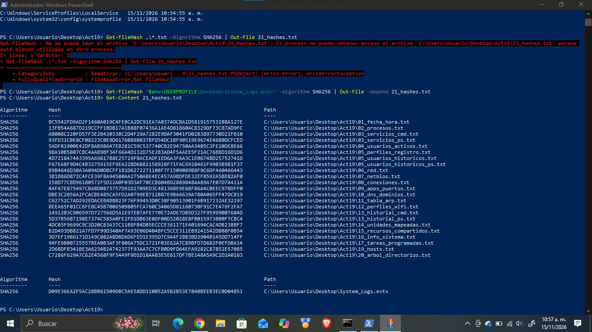
Resultado. Se obtuvieron 24 hashes SHA-256: uno por cada uno de los 23 archivos .txt de la carpeta Act19 (incluidos 05_perfiles_registro.txt y las dos versiones de 05_usuarios_historicos) y uno para System_Logs.evtx. Los valores están guardados en el archivo 21_hashes.txt. El primer comando mostró un error en rojo: «No se puede leer el archivo 21_hashes.txt: el proceso no puede obtener acceso al archivo porque está siendo utilizado en otro proceso». Ocurrió porque el comodín *.txt también incluyó al propio archivo de salida, que estaba abierto para escritura; no afectó a los demás archivos, y 21_hashes.txt no queda hasheado a sí mismo, como es normal.
Importancia y límites. Estos hashes sirven como referencia para la cadena de custodia: si más adelante se vuelven a calcular y coinciden, la evidencia se mantiene íntegra. En esta práctica los hashes se calcularon el 15/11/2026 a las 10:57 a. m., unas 12 horas después de haber creado los archivos (la mayoría, entre las 09:24 y las 10:16 p. m. del día anterior), por lo que existe un lapso en el que no se puede demostrar que no hubo cambios. La práctica recomendada es calcular el hash de cada archivo inmediatamente después de crearlo y copiar archivos y hashes a un medio externo.
Como cierre, el Explorador de archivos muestra la carpeta de trabajo con los archivos de evidencia numerados (figuras 46 y 47); en la segunda, desplazada hacia abajo, aparece 21_hashes.txt. Las fechas de modificación van desde las 09:24 p. m. del 14/11/2026 (01_fecha_hora) hasta las 10:16 p. m. (20_arbol_directorios), de modo que la adquisición principal duró alrededor de una hora; los archivos del punto 5 complementario y de los hashes son del 15/11/2026, por la mañana. La copia del archivo hosts conserva su fecha original (07/12/2019, 03:12 a. m.) y el registro System_Logs.evtx se guardó aparte, en el Escritorio, tal como pide la actividad.
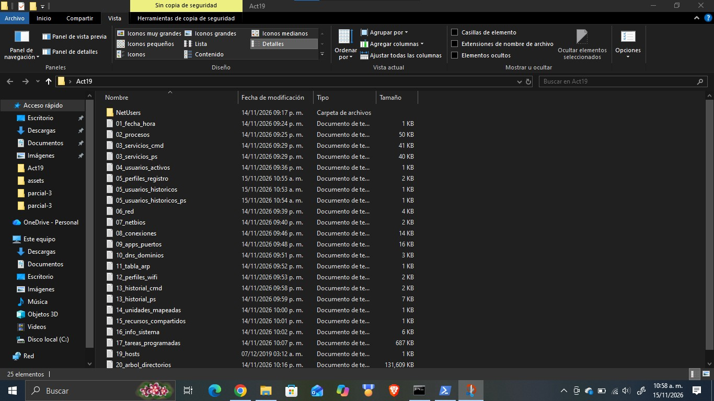
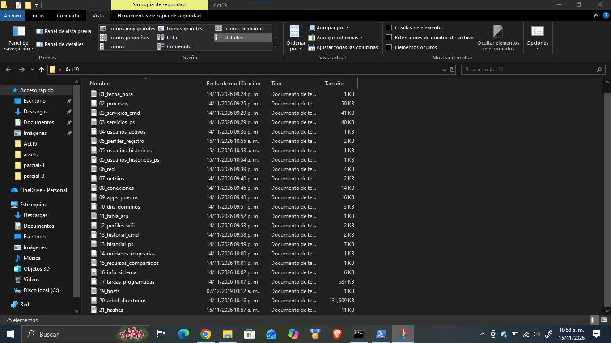
Resultados
Tabla de hallazgos
La tabla 9 consolida las respuestas de los 20 puntos con la evidencia que las sustenta.
| Punto | Dato | Hallazgo | Figura |
|---|---|---|---|
| 1 | Fecha y hora | 14/11/2026, 09:24 p. m. (UTC-06:00) | 4 |
| 2 | Procesos | Procesos normales de Windows y del usuario (Chrome, Recorte); además cmd, PowerShell y tasklist del analista | 4–6 |
| 3 | Servicios | sc query solo muestra activos; Get-Service también los detenidos; WinDefend activo, WSL y Hyper-V presentes | 7, 8 |
| 4 | Usuarios activos | Una sesión local: «usuario», consola, desde las 07:52 p. m. | 9 |
| 5 | Usuarios históricos | NetUsers (actual e historial) sin entradas; con WMI y el Registro: único usuario «Usuario» (SID -1001) | 10–13 |
| 6 | Red | 192.168.1.141 por Wi-Fi, puerta de enlace 192.168.1.254, DNS 8.8.8.8 y 8.8.4.4 | 14, 15 |
| 7 | NetBIOS | DESKTOP-A6V0BD7 (<00>, <20>) y grupo WORKGROUP | 16, 17 |
| 8 | Conexiones | Conexiones externas todas al puerto 443; locales al 8009 de 192.168.1.161 | 18–20 |
| 9 | Puertos y programas | Puertos en escucha vinculados a su ejecutable; servicios web de terceros en 3582 y 8080 | 21–23 |
| 10 | Dominios | Dominios de Delivery Optimization de Microsoft y mshome.net | 24, 25 |
| 11 | ARP | Router 192.168.1.254 y dos equipos más (192.168.1.161 y 192.168.1.182) | 26 |
| 12 | WiFi | 18 perfiles guardados; la clave se puede ver en texto claro con key=clear | 27, 28 |
| 13 | Historial | CMD con los comandos de la adquisición; PowerShell con comandos de desarrollo | 29, 30 |
| 14 | Unidades mapeadas | Ninguna | 31 |
| 15 | Recursos compartidos | Solo C$, IPC$ y ADMIN$ (administrativos) | 32 |
| 16 | Sistema | Lenovo 2349EJ6, Windows 10 Pro 19045, instalado el 22/11/2023, WORKGROUP | 33, 34 |
| 17 | Tareas programadas | Solo tareas de Microsoft en las capturas revisadas | 35–38 |
| 18 | Registros de eventos | System exportado como System_Logs.evtx en el Escritorio | 39 |
| 19 | Archivo hosts | Sin entradas activas, sin modificar desde 2019 | 40 |
| 20 | Árbol de directorios | 714,723 archivos y 670,912 directorios, con fecha de creación | 41–44 |
| — | Hashes | 24 hashes SHA-256 (23 .txt y System_Logs.evtx) en 21_hashes.txt | 45–47 |
Análisis e indicios de actividad maliciosa
Los datos recolectados no muestran un compromiso evidente del equipo: no se observan procesos de nombre sospechoso, conexiones a puertos inusuales, entradas en hosts ni tareas programadas de terceros. Sí hay hallazgos que se deben verificar y que, en un caso real, se tratarían como indicios a investigar. La tabla 10 los resume.
| N.º | Observación | Evidencia | Lectura y acción |
|---|---|---|---|
| 1 | Servicios web y de red de terceros escuchando en 0.0.0.0 (puertos 2343, 3580, 3582, 8080 y 59110) | netstat -anob | Probable software legítimo (National Instruments); verificar ruta, firma y regla de firewall |
| 2 | SMB (445), NetBIOS (139) y recursos administrativos C$, IPC$ y ADMIN$ | netstat, net share | Configuración normal, pero amplía la superficie de ataque; restringir con el firewall |
| 3 | Contraseñas WiFi recuperables en texto claro por un administrador | netsh ... key=clear | Tratar como información confidencial; cambiar contraseñas si hubo un acceso no autorizado |
| 4 | Paquete pynput (captura de teclado y ratón) en el historial de PowerShell | Historial de PowerShell | Uso probable en una práctica de programación; confirmar con el usuario |
| 5 | DNS manual (8.8.8.8 y 8.8.4.4) | ipconfig /all | Configuración legítima frecuente; verificar que no la cambiara un malware |
| 6 | Elementos creados en la Papelera durante la adquisición | dir /s /t:c | Documentar qué se eliminó y por qué |
| 7 | Windows 10 sin soporte estándar desde octubre de 2025 | systeminfo | Riesgo de vulnerabilidades sin parche; migrar o activar las actualizaciones extendidas |
| 8 | Los comandos del analista aparecen en procesos e historial | tasklist, doskey, PSReadLine | Efecto del investigador; documentar y distinguir de la actividad del usuario |
Correlación entre evidencias. Varios datos se confirman entre sí: las IP 72.145.35.x de netstat coinciden con los dominios de Microsoft de la caché DNS; los PID de netstat -anob coinciden con los de tasklist; la dirección 192.168.1.254 coincide en ipconfig, ARP y la puerta de enlace; el grupo WORKGROUP coincide en nbtstat y systeminfo; y la hora de inicio de la concesión DHCP coincide con el arranque del sistema. Esas coincidencias dan consistencia a la adquisición.
| Hora | Evento | Fuente |
|---|---|---|
07:51:11 p. m. | Arranque del sistema | systeminfo |
07:51:25 p. m. | Se obtiene la concesión DHCP de la red Wi-Fi | ipconfig /all |
07:52 p. m. | Inicia sesión el usuario «usuario» (consola) | query user |
09:24 p. m. | Inicio de la adquisición: fecha y hora, y procesos | date, time, tasklist |
09:26 p. m. a 09:44 p. m. | Servicios, usuarios, información de red y NetBIOS | sc query, Get-Service, query user, ipconfig, nbtstat |
09:46 p. m. a 09:57 p. m. | Conexiones, puertos, caché DNS, ARP y perfiles WiFi | netstat, ipconfig, arp, netsh |
09:58 p. m. a 10:00 p. m. | Historial de comandos de CMD y PowerShell | doskey, PSReadLine |
10:01 p. m. a 10:09 p. m. | Unidades, recursos compartidos, información del sistema y tareas | net use, net share, systeminfo, schtasks |
10:11 p. m. | Exportación del registro System y copia de hosts | wevtutil, copy |
10:16 p. m. a 10:19 p. m. | Árbol de directorios y revisión de la carpeta de evidencia | dir /s /t:c |
Orden de volatilidad, integridad y limitaciones
Orden de volatilidad. La RFC 3227 indica recolectar primero lo más volátil. La adquisición siguió ese criterio: primero la fecha y hora, los procesos, los servicios, las sesiones, la configuración y las conexiones de red, la caché DNS y la tabla ARP (datos en memoria que cambian en segundos o minutos); después, el historial de comandos, la configuración del sistema y las tareas; y al final los registros de eventos, el archivo hosts y el árbol de archivos del disco (datos persistentes). El orden respeta el criterio, con una excepción: no se capturó la memoria RAM, que en un caso real se adquiere antes que todo lo demás, con una herramienta especializada.
Integridad y cadena de custodia. Los archivos se guardaron en la misma unidad del sistema analizado, y no en un medio externo, de modo que la propia recolección modifica el disco. Los hashes SHA-256 se calcularon hasta el 15/11/2026 a las 10:57 a. m., unas 12 horas después de crear la mayoría de los archivos; lo recomendable es calcular el hash de cada archivo inmediatamente después de crearlo y registrarlo en la cadena de custodia con quién, cuándo y con qué herramienta se obtuvo.
Limitaciones. Los resultados describen un instante (14/11/2026, desde las 09:24 p. m.); el sistema no estaba aislado de la red, de modo que los datos cambiaron durante la hora que duró la recolección. Las capturas muestran partes de salidas largas, y el contenido completo está en los archivos .txt. Los comandos usados son del propio sistema, que un malware con privilegios podría manipular (rootkits), por lo que en un caso real se usarían binarios de confianza desde un medio externo y se compararía con una imagen de memoria. Además, el punto 5 quedó limitado por el alcance de NetUsers sin la opción de historial. Por último, la identificación de las IP remotas y de algunos programas es una hipótesis a confirmar con WHOIS y con la verificación de firmas digitales.
Siguientes pasos de la investigación
Con base en los hallazgos y en las limitaciones, se proponen los siguientes pasos para una investigación forense real (tabla 12).
| N.º | Línea | Acción propuesta |
|---|---|---|
| 1 | Preservar la evidencia | Calcular el SHA-256 de los archivos .txt y del .evtx, copiarlos a un medio externo y registrar la cadena de custodia. |
| 2 | Capturar la memoria | Adquirir la RAM con una herramienta especializada y analizarla con Volatility para ver procesos ocultos, conexiones y credenciales; después, hacer una imagen forense del disco. |
| 3 | Analizar los registros de eventos | Abrir System_Logs.evtx y exportar también Security y Application, para revisar inicios de sesión (eventos 4624 y 4625), creación de procesos (4688), instalación de servicios (7045) y cambios de cuentas. |
| 4 | Verificar procesos y servicios | Comprobar la ruta, el editor y la firma digital de los programas de terceros (lkads, nisvcloc, nidmsrv, SystemWebServer, ApplicationWebServer) y obtener el hash de sus ejecutables para consultarlo en VirusTotal. |
| 5 | Identificar las IP remotas | Hacer WHOIS y geolocalización de las IP con conexión establecida, y comprobar si hay IP en listas de reputación. |
| 6 | Revisar persistencia | Examinar el Registro (Run y RunOnce), las carpetas de Inicio, los servicios y las tareas no pertenecientes a Microsoft con Autoruns, y filtrar el archivo de tareas. |
| 7 | Reconstruir la línea de tiempo | Construir una línea de tiempo con la MFT, los registros, el historial del navegador y los archivos recientes; revisar el contenido de la Papelera de reciclaje. |
| 8 | Reducir la exposición | Restringir los puertos 445 y 139 y los servicios web de terceros con el firewall, cambiar las contraseñas WiFi expuestas y actualizar o migrar el sistema operativo. |
Conclusión
La adquisición en caliente permitió recolectar, con comandos del propio sistema, la información volátil y de configuración de un equipo Windows 10 Pro: fecha y hora, 20 puntos de evidencia en archivos de texto, un registro de eventos exportado y el árbol de archivos del disco. Cada comando se explicó, se ejecutó y se interpretó. La comparación entre CMD y PowerShell mostró que ambos leen el mismo administrador de servicios, pero sc query solo muestra los servicios activos, mientras que Get-Service muestra también los detenidos y entrega objetos que se pueden filtrar y exportar, por lo que ambos se complementan.
El análisis no encontró indicios claros de actividad maliciosa: los procesos, servicios, conexiones y tareas observados corresponden a Windows y a programas de uso normal. Se señalaron observaciones para verificar, como los servicios web de terceros que escuchan en todas las interfaces, los recursos administrativos compartidos, las contraseñas WiFi recuperables y el fin del soporte de Windows 10. Como limitaciones, la recolección modifica el sistema, los archivos se guardaron en el mismo disco, no se capturó la RAM, los hashes se calcularon horas después de crear los archivos, y NetUsers no mostró historial ni con /history, por lo que el punto 5 se completó con WMI y el Registro. Esta práctica mostró la importancia de documentar cada paso y de seguir el orden de volatilidad desde los primeros minutos de una escena digital.
Referencias bibliográficas
- Brezinski, D., & Killalea, T. (2002). Guidelines for evidence collection and archiving (RFC 3227). Internet Engineering Task Force. https://www.rfc-editor.org/rfc/rfc3227
- Carvey, H. (2014). Windows forensic analysis toolkit: Advanced analysis techniques for Windows 8 (4.ª ed.). Syngress.
- Kent, K., Chevalier, S., Grance, T., & Dang, H. (2006). Guide to integrating forensic techniques into incident response (NIST Special Publication 800-86). National Institute of Standards and Technology. https://csrc.nist.gov/pubs/sp/800/86/final
- Microsoft. (s. f.). arp. Microsoft Learn. https://learn.microsoft.com/en-us/windows-server/administration/windows-commands/arp
- Microsoft. (s. f.). Get-Service. Microsoft Learn. https://learn.microsoft.com/en-us/powershell/module/microsoft.powershell.management/get-service
- Microsoft. (s. f.). netstat. Microsoft Learn. https://learn.microsoft.com/en-us/windows-server/administration/windows-commands/netstat
- Microsoft. (s. f.). sc query. Microsoft Learn. https://learn.microsoft.com/en-us/windows-server/administration/windows-commands/sc-query
- Microsoft. (s. f.). schtasks. Microsoft Learn. https://learn.microsoft.com/en-us/windows-server/administration/windows-commands/schtasks
- Microsoft. (s. f.). Task Scheduler error and success constants. Microsoft Learn. https://learn.microsoft.com/en-us/windows/win32/taskschd/task-scheduler-error-and-success-constants
- Microsoft. (s. f.). tasklist. Microsoft Learn. https://learn.microsoft.com/en-us/windows-server/administration/windows-commands/tasklist
- Microsoft. (s. f.). wevtutil. Microsoft Learn. https://learn.microsoft.com/en-us/windows-server/administration/windows-commands/wevtutil
- Microsoft. (s. f.). Windows 10 Home and Pro lifecycle. Microsoft Learn. https://learn.microsoft.com/en-us/lifecycle/products/windows-10-home-and-pro